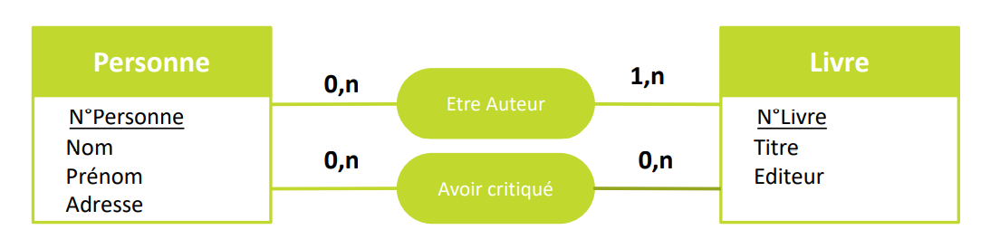

Definition
Ensemble de données(quantité, date, nom, mot de passe, email, ...)
structurés/organisé non redondantes (sans doublons).
dont l'organisation est régie par un modèle de données.
concernant un domaine bien specifique interogeable par
requette stocker sur un support informatique sous plusieurs format telsque: txt csv
doc image json... .
Modèle de données:
La description de l'organisation des données.
Les diferents types de models de données:
Le model logique ou conceptuel
les modèles logiques décrivent
des entités et des attributs et les relations qui les lient,
offrant ainsi une représentation claire de la finalité des données
dans le métier.
Le model physique:
Les modèles physiques mettent ensuite en œuvre le
modèle logique sous forme de tables, de colonnes, de types de données
et d’index, associés à de brèves règles d’intégrité des données.
Le modèle physique définit également l’allocation de mémoire sur le disque
sur la base des options de configuration fournies par la plupart des systèmes
hôtes (Oracle, MS SQL Server, MySQL, etc.).
Entité-Association
Une entité: c'est une notion en rapport avec un domaine pour
lequel les données sont enregistré.
Une association: une relation entre differente entité
Un attribut: c'est une caracteristique de l'entité.
cardinalité: la maniére dont les entités sont liées entre elle représente par le couple d'entier (x,y).
exemple :

TERMINOLOGIES ESSENTIELLES
Les formes normales
>
Les formes normales ont pour objectif de définir la décomposition des schémas relationnels, tout en préservant les DF et sans perdre d'informations, afin de représenter les objets et associations canoniques du monde réel de façon non redondante. On peut recenser les 6 formes normales suivantes, de moins en moins redondantes :
- la première forme normale
- la deuxième forme normale
- la troisième forme normale
- la forme normale de Boyce-Codd
- la quatrième forme normale
- la cinquième forme normale
1FN – Première forme normale
Est en première forme normale, une relation (ayant par définition une clé) dont les attributs
possèdent tous une valeur sémantiquement atomique
2FN – Deuxième forme normale
la relation respectant la première forme normale et respectant le principe suivant :
Les attributs d’une relation sont divisés en deux groupes : le premier groupe est composé
de la clé (un ou plusieurs attributs). Le deuxième groupe est composé des autres attributs (éventuellement vide).
La deuxième forme normale stipule que tout attribut du deuxième groupe ne peut pas dépendre d’un sous-ensemble
(strict) d’attribut(s) du premier groupe. En d’autres termes : « Un attribut non clé ne dépend pas d’une partie
de la clé mais de toute la clé. »
3FN – Troisième forme normale
Les attributs d’une relation sont divisés en deux groupes : le premier groupe est composé de la clé (un ou plusieurs attributs).
Le deuxième groupe est composé des autres attributs (éventuellement vide). La troisième forme normale stipule que tout attribut
du deuxième groupe ne peut pas dépendre d’un sous-ensemble (strict et excluant l’attribut considéré) d’autres attribut(s) du second groupe.
En d’autres termes : « Un attribut non clé ne dépend pas d’un ou plusieurs attributs ne participant pas à la clé ».
Dit encore autrement : « Tous les attributs non clé doivent dépendre directement de la clé, au sens où il n’y a aucun attribut non
clé dépendant de la clé par dépendances transitives par l’intermédiaire d’autres attributs non clé ».
FNBC – Forme normale de Boyce-Codd
la relation respectant la troisième forme normale et dont tous les attributs non-clé (hormis les clés candidates qui sont
neutres et ne doivent pas être considérées) ne sont pas source de dépendance fonctionnelle (DF) pour une partie de la clé.
Le non-respect de la 2FN, 3FN et la FNBC entraîne de la redondance, une même donnée étant répétée un nombre considérable de fois.
4FN - quatrième forme normale
Pour être en 4FN, il faut respecter la 3FN (et non nécessairement la FNBC). Pour toute relation de dimension n (avec n supérieur à 1)
en forme normale de Boyce-Codd, les relations de dimension n − 1 construites sur sa collection doivent avoir un sens.
Il ne doit pas être possible de reconstituer les occurrences de la relation de dimension n par jointure de deux relations de dimension n − 1.
Cette normalisation conduit parfois à décomposer une relation complexe en deux relations plus simples.
5FN - cinquième forme normale
Pour toute relation de dimension n (avec n supérieur à 2) en quatrième forme normale, il ne doit pas être possible de retrouver l’ensemble
de ses occurrences par jointure sur les occurrences des relations partielles prises deux à deux. Cette normalisation conduit
parfois à décomposer une relation complexe en plusieurs relations plus simples. Le non-respect de la 4FN et 5FN entraîne de la perte de
données et les données manquent de précision.
Niveau 2: Magasins de documents
Exemples de systèmes: MongoDB Exemples d'utilisateurs: Scratchpad d'Expedia Aussi connus sous le nom de systèmes de base de données
orientés document, les magasins de documents (comme les feuilles de calcul) n'ont pas de schéma. Cela signifie que les enregistrements
peuvent être non uniformes et / ou avoir une structure imbriquée et que les valeurs peuvent être stockées sous forme de tableaux.
Les magasins de documents sont un exemple majeur de base de données NoSQL. Ce type de DBMS gagne en popularité à mesure que des
solutions à des défis spécifiques de gestion des données se présentent.
FNDC - forme normale domaine clé
Une relation est en FNDC si et seulement si toutes les contraintes sont la conséquence logique des contraintes de domaines et des contraintes
de clés qui s’appliquent à la relation. Pour se souvenir de l’ordre et des caractéristiques des trois premières formes normales,
il suffit de se rappeler le serment que tous les témoins doivent prêter devant la justice : Je jure de dire la vérité, toute la vérité,
rien d’autre que la vérité. Ce qui donne : 1FN = La clé. 2FN = Toute la clé. 3FN = Rien que la clé.